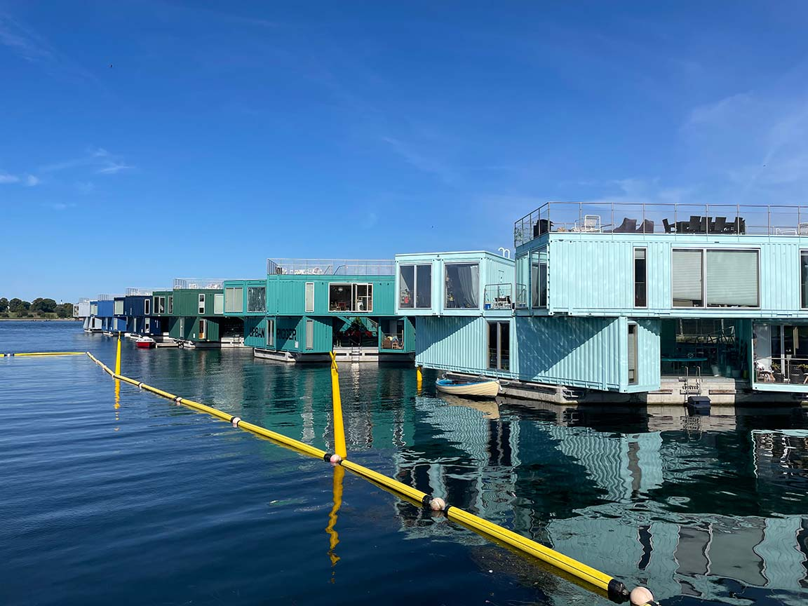

Individuel Eksurtion Photoshop opgave
I denne opgave skulle vi tage forskellige billeder af broer - under forskellige kategorier. En af kategorierne var refleksion.Derefter skulle vi fjerne noget, tilføje noget og udfylde baggrunden.
I min fritid kan jeg godt lide, at lave illustrationer igennem photoshop. Dette er min hund.